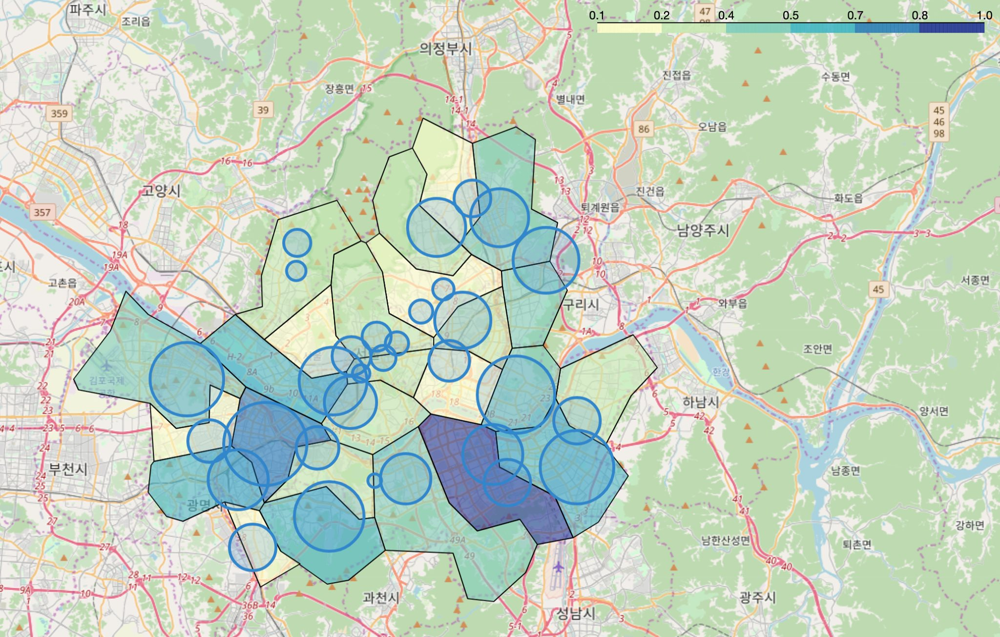

서울시 범죄 현황 분석

서울시 범죄 현황 분석
- Intro to DS
'강남 3구의 체감 안전도가 높다.'라 제시한 기사를 검증해본 것인데요, 공공데이터포털의 서울특별시 관서별 5대 범죄 현황 데이터를 활용했습니다. pandas를 이용해 데이터를 정리하고, sklearn의 preprocessing 모듈을 활용해 데이터들을 정규화 해보았구요. Google Maps를 얻은 주소와 경도, 위도를 활용해 Folium으로 지도에 '인구 대비 범죄율'을 시각화해 보았습니다. 또한 Seaborn의 heatmap으로 범죄 검거비율까지 시각화해보았습니다!